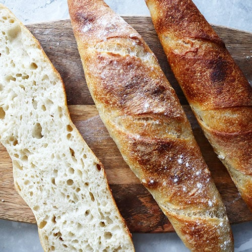
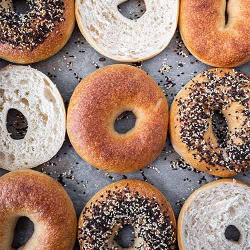
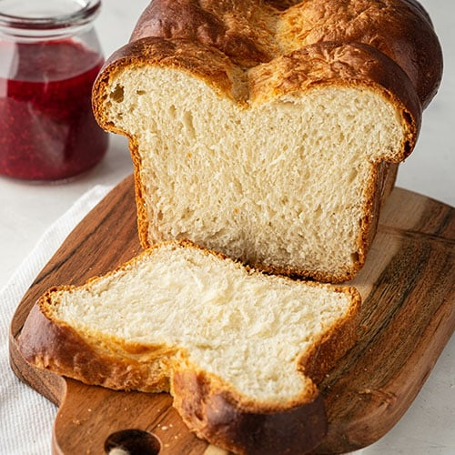
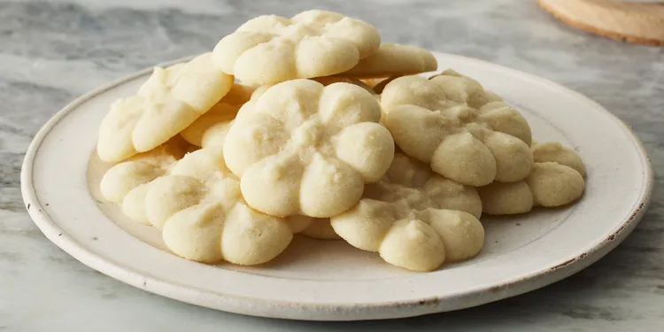
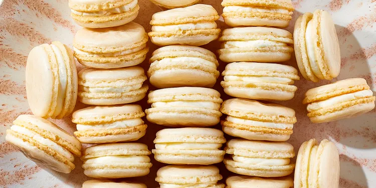

Our Delicious Products
At Baker's Delight, we take pride in crafting a wide variety of baked goods using traditional methods and the finest ingredients. From artisanal breads to decadent pastries, each item is made with love and care.
Artisanal Breads

Arepa
Round, flat breads baked in butter or oil after making them with masa, water, and salt. Typically split and eaten as sandwich bread.

Baguette
Long, cylindrical bread loaves made with wheat, water, yeast, and salt. Features a pillowy interior and thin, crunchy crust.

Bagel
Bread with a hole in the center shaped like an "O". Made with barley malt syrup, flour, yeast, water, and salt. Initially boiled, then baked.

Brioche
French bread with a creamy, fluffy, and soft inner layer. Made with flour, milk, eggs, sugar, butter, yeast, salt, and occasionally brandy.
Gourmet Cookies
Chocolate Chip Cookies
Drop cookies that can be either soft and doughy or crisp and crunchy depending on ingredients and cooking time.

Shortbread Cookies
Called "short" because of their high butter to flour ratio. They have a crumbly and soft feel with less flour and sugar than butter cookies.

Macarons
Round cookies made of meringue with a creamy ganache filling in between. Delicate, colorful, and irresistibly sweet.
Delicious Pastries
Mochi
Sweet, chewy rice pastry from Japan. Typically produced with cooked and pounded rice, but can also be made with rice flour.
Fruit Tart
Features a light, slightly tangy mascarpone filling and apricot preserve-glazed fruit on a shortbread-like crust.
Cheese Puffs (Gougères)
Incredibly tasty, visually stunning, and simple to prepare. Perfect as an appetizer or snack with their light, airy texture.
Cinnamon Rolls
Airy and buttery dough with a sweet cinnamon filling. Topped with cream cheese icing for the perfect balance of flavors.
Decadent Doughnuts
Cake Doughnuts
Have a thick foundation that accommodates all your favorite toppings. Leavened with baking powder and dipped in oil to cook.
Jelly Doughnuts
Circular and holeless, leavened with yeast. The center is packed with jelly, jam, preserves, or chocolate for a taste explosion.
Glazed Doughnuts
The classic round doughnut with a hole in the center. Yeasted base with a sweet and sticky sugar or chocolate glaze.